Basics
Getting started
Install in a few minutes, then pick where to go next: play with bots, play with friends, run a server or make something. Coming from 0.1? See what's new in 1.0.
What you need
- Counter-Strike 1.6 or Condition Zero on Steam, the current version. Old retail or repacked copies can't run the mods (why).
- Windows 10 or 11, or a Mac with the Windows version of Steam and the game in CrossOver (Mac setup).
Install
- Download Loner-Strike from lonerstrike.com: the
.dmgon a Mac, the-setup.exeon Windows. - On Windows, if it says it protected your PC, click More info, then Run anyway (why).
- Close Counter-Strike. Setup can't change the game's files while it runs.
- Open Loner-Strike. Setup finds your game, and you pick what to install. The basics take under a minute, everything 2 to 5 minutes.
On a Mac
The Mac version of Counter-Strike can't run mods, so the game runs through CrossOver (paid, with a free trial):
- Install CrossOver in Applications.
- Make a bottle, install the Windows version of Steam in it, then install the game from there.
- Open Loner-Strike. It finds Steam in your CrossOver bottles by itself. With more than one, setup asks which to use.
A folder you choose by hand has to be inside the bottle's drive_c, and servers on this Mac live in the same bottle as the game. With Parallels instead, install the Windows version of Loner-Strike inside Windows.
What setup installs
- The mod loader (Metamod-P, AMX Mod X and ReGameDLL).
- The bot brain: Loner-Strike's own build of the game's bots, which play like people.
- The Game Mode Menu: the in-game menu on F3, and the part the app talks to.
- The mods you pick, which you can change later in Mods.
Setup backs up every file it replaces, and mods only run in games you host.
Basics
What's new in 1.0
1.0 is the full release. Everything from 0.1 is still here, and it now covers the whole loop: build something, play it with bots, host it, and share it.
Play
- Two new modes with their own maps: Last Stand on ls_outpost and Battle Royale on br_valley. Both work on several stock maps too.
- Bots in more modes: they run deathrun courses and spring the traps, and they surf.
- Bots that play like people, on Loner-Strike's own bot brain, with team chat and voice commands.
Build
A new Tools section in the app, marked Beta while it settles in. Every tool has its own page here:
- Map editor that compiles with SDHLT and playtests with bots, and opens Hammer and J.A.C.K. maps.
- Game Mode Studio: game modes from nodes and wires, debugged live in the game.
- Plugin Studio for AMX Mod X, and Creature Studio for creatures and waves.
- Map tools: Map doctor, Map simulator, Nav fixer, Callouts, Radar maker.
- Make the game yours: Crosshair & config, Bot people, Spray maker.
- Look inside: Map viewer, Replay, Demos, Textures & models.
Host
- Servers update themselves once nobody's playing, and a Linux server is backed up to your computer every day.
- New tabs on every server: Health, Who can join, Moderation and Stats.
- Shared control is safer: Moderators can't act against the owner or Admins.
- A tick rate setting and a mode rotation; Discord hears when a server goes down.
Share and connect
- Community: maps and modes made with Loner-Strike, hosted on GameBanana and moderated. Try one in a click, or publish your own.
- AI agents: let coding agents like Claude Code, Codex, OpenCode or Cursor use the tools.
Every change is in the changelog.
Basics
Finding your way around
What each page in the app's sidebar is for. They're grouped the same way as a server's tabs.
The pages
| Group | Pages |
|---|---|
| Game | Play (mode, map, bots, presets), Bots, Rules (round time, money, friendly fire), Fun (gravity, unlimited ammo, auto bunnyhop), Add-ons, Rotation & extras |
| People | Players (heal, give, kick, ban, swap teams), Moderation, Stats, Admins, Welcome page |
| Online | Play with friends, Find servers |
| My library | Maps, Mods, Skins & models, Sounds, Get more |
| Hosting | Servers |
| Tools (Beta) | The map editor, Game Mode Studio and every other tool, and Community |
| Settings | Updates, phone access, your game folder, backup and restore, AI agents, help |
Most of these have their own topic in this sidebar.
Before and during a game
Bots, Rules, Fun and Add-ons work before you start: changes apply when you start a game. A few things, like kicking bots or restarting the round, need a game running. Players fills in once one is going.
The bar at the top of every page says what you're changing: Your game and which one, or Server: and its name, with Back to my game.
Shortcuts
Cmd plus 1 to 9 (Ctrl on Windows) jumps to the first nine pages, and Cmd , opens Settings.
On your phone
The app also runs in your phone's browser, so you can change things without leaving the game.
- In Settings, under Use on your phone, turn on Phone access.
- Scan the QR code with a phone on the same Wi-Fi. You can add it to your home screen.
- On Windows, set your Wi-Fi to a Private network, or the phone can't reach it.
Installing and removing things only works on the computer. Sign out all phones in the same place signs every phone out.
Notifications
Tell me when someone joins your game in Settings, and the same switch on each server's Overview, sends a notification on your computer. Player reports always notify.
Basics
Playing
Starting a game and changing things while you play.
Start a game
On Play, pick a mode and a map, set the bots, and start. The app opens the game and loads straight in. If the game is already open, it restarts it into your game.
- Presets set everything at once: Competitive 5v5, Arcade chaos, Zombie night and more.
- Recently played starts a game you've played before.
- Changes you make while playing load on the next map, or the next round for round settings.
In the game
- F3 opens the Game Mode Menu: modes, maps, bots and settings. Typing
/menuin chat does the same. - F4 opens quick actions: restart the round, add or remove a bot, god mode, noclip, respawn, heal, $16000 and more. Typing
/qdoes the same.
Both are for you as the host and for admins. If F3 does nothing, type bind F3 gamemenu in the game console.
In the app, a bar of quick actions sits at the top while a game runs: Pause, Round (restart, end, add time, Start a mode vote), Map, the bot count with Difficulty and Bot style in its menu, You (god mode, noclip, respawn), Announce and Record demo.
Game modes
New in 1.0, Last Stand and Battle Royale come with their own maps. Zombie Plague, Warcraft 3, SuperHero, Gun Game, Deathrun, Surf, Paintball and the rest are installed from Mods. Each one is patched so bots can play it, and each has a note on how well they do. Switch modes from Play or the F3 menu; switching reloads the map.
Modes have their own chat commands, like /war3menu in Warcraft 3 or /guns in deathmatch. See In-game commands.
5v5 matches
Match mode runs a proper match: warmup, /ready, a knife round for sides, and pauses. The Play page shows the match panel when it's on. The commands are under In-game commands.
Basics
Maps
Finding maps, getting new ones, and teaching them to the bots.
Browse
The Maps page shows every map you have, with pictures, search, map types, favourites and hidden maps. Pictures fill in by themselves in the background. Open a map to start a game on it or send it to your servers.
Maps you download work in both games. Condition Zero's own _cz maps only load in Condition Zero, so Counter-Strike 1.6 leaves them out of its lists, rotations and votes; Show lists them if you want to look.
Get new maps
- Get maps downloads from GameBanana, with what each map needs.
- Add a map file takes a
.bspor an archive (zip, rar or 7z). - Copy maps from your game, on a server, copies maps you already have.
Bots on new maps
Bots need to know a map before they can play it well. That's two things, made once per map and kept for good:
- Navigation: where they can walk, jump, drop and climb, as a mesh of areas over the floor (the map's
.navfile). - Map knowledge: where each spot can be seen from, where the cover is, which corners and angles to watch and which walls bullets go through (the map's
.lsvfile).
Maps that come ready
Every map Loner-Strike installs (the modes' maps and the fun and popular ones) and the stock Counter-Strike 1.6 maps, all but the biggest (de_survivor, which bots learn the first time), come with both files ready, so bots play them straight away. On the stock maps they also know the places by name, like BombsiteA, Middle or Tunnel. Condition Zero's own maps come with Valve's navigation already.
These come down by themselves: a few minutes after the app starts, and every few hours after that, it checks for ready-made files for the maps you have and puts them in. It only adds files for a map; it never changes the map itself.
- Only the exact map. A ready-made file fits only the map file it was made from. If you have a different version of a map (another download, an older build), it's left alone and your bots learn that version themselves.
- Bots' own files are replaced. If your bots learned one of these maps before, their files are swapped for the ready-made ones, which know the map at least as well.
- Hand-made ones are kept. A navigation file with place names in it was made by hand (or by Valve), so it's never replaced.
Any other map
A map you add yourself, from Get maps or a file, is learned the first time it's played. On a map they don't know, a Learn this map banner appears on the Bots page, and the map timer waits while they learn.
- Navigation first. A bot walks the map to work out where everyone can go. A small map takes a few minutes; a big or detailed one can take 15 minutes or more on a slower computer, and the game may seem to pause while it works.
- Then the map knowledge. Loner-Strike studies the map in the background during the first minute or two of play, tracing sightlines, cover and wallbangs. You won't notice it; the bots just play the map better once it's done.
- Do it ahead of time. Teach bots maps on the Maps page learns several in one go, so it's done before you play. It can also Re-learn maps bots already know if they play one badly. (A map that came ready gets its ready-made files back at the next check.)
What the bots know about your maps is shared from your game to your servers.
When a download fails
- GameBanana is busy: try again in a minute.
- No map found in that download: it isn't a map, or it's for another game.
- No longer on GameBanana: the author removed it.
- Already installed: remove the old one first to install another version.
Basics
Mods, sounds and more
Adding modes, add-ons, sounds and your own plugins.
Mods
A game mode changes how the whole game plays, and you switch between modes. An add-on, like the grappling hook (bind a key to it: bind v +hook in the console), works on top of whichever mode is on and is switched on and off in Add-ons.
- Install and Remove each one. Removing puts back anything it replaced.
- Reinstall puts a mod's files in fresh. A mod that says Didn't build needs Try again.
- Repair puts Loner-Strike's basics back if something removed them. Your settings and mods stay.
Your own plugins
Under Your own plugins in Mods, Add a plugin takes an AMX Mod X plugin. A .sma source file is compiled for you.
Skins and models
Weapon skins, player models, sprays, effects, and HUD and menus you've installed show on Skins & models under My library, with Remove on each. Only you see them in your own game; removing one puts the game's own back. A server has its own Skins & models tab, where players download what it uses.
Get more
Browses GameBanana's Counter-Strike 1.6 section for maps, skins, models and sounds, sorted by most downloaded, newest or most liked. Add from a file takes one you already downloaded. The Get buttons on Maps, Skins & models and Sounds open it on that kind.
Sounds
- Round-end music: songs at the end of each round. Add tracks for your own.
- Quake sounds: first blood, multi kill, godlike and the rest, with two announcers to pick from. A new setup starts with them off: switch them on here or in Add-ons.
- Sound packs: other sets of game sounds.
- Your sounds: sounds you got from GameBanana, with Remove to put the game's own back.
Changes to sounds load on the next map. The app also has a radio with eleven stations.
Game modes
Last Stand
Co-op against waves of creatures. Everyone plays Counter-Terrorist and holds a base; the enemies are zombies, runners, brutes, spitters and bosses.

Start it
- On Play, under Game mode, pick Last Stand.
- Pick the map. Maps for Last Stand lists the ones made for it: ls_outpost, and stock maps with a Last Stand setup (de_dust2, de_inferno, de_nuke, de_aztec, cs_office).
- Press Play Last Stand on the map. Any map whose name starts with
ls_picks the mode by itself.
How a stand goes
- You get about 45 seconds to get ready, then the waves come. A banner at the top says the wave and how many are left.
- Between waves (20 seconds) you get money and a supply drop, and anyone who died comes back.
- A boss comes every few waves. The default is 10 waves; Endless keeps a best-wave record for each map.
- You lose when nobody's left standing, or when the creatures overrun the base.
Holding the base
- Barricades: hold E (use) on a gate's boards to repair them, board by board.
- Reviving: a downed teammate can be picked up. Hold use on them.
- Buying: the buy menu works during waves too, in buy zones. The armory shop (press use there, or say
/shop) sells repair kits, armour, grenades, ammo and medkits, a bit dearer each wave.
ls_outpost
A walled desert outpost at night. Three gates (west, east and south) are closed by boarded barricades you can shoot through. A firing step runs along the walls where creatures can't reach you, the keep in the north is the last place to hold, and the armory has the shop. Supply drops land in the field outside the west wall: climb down the ladder to get them. Creatures can't climb.
Players joining your server don't download anything: the map uses the game's own textures and sounds.
Settings
In the game, F3 (or say /ls) has the mode's settings:
| Setting | Choices |
|---|---|
| Waves | 5, 10, 15 or Endless |
| Wave difficulty | Easy, Normal, Hard or Nightmare (with shared lives: 3, 5 or 10) |
| Revive time | Off, 15, 30 or 60 seconds |
| Base overrun after | 10, 15 or 25 seconds of creatures inside, or Never |
| Bots' last chance | When every person is down, how long the bots get to save it, or they carry on alone |
| Buy anywhere | Off, or between waves |
| Enemies | Creatures, or knife-only zombie bots (from the next map) |
Bots in Last Stand
With creatures, every bot defends with you, buys guns between waves and holds the walls. With zombie bots as the enemy, four bots defend and the rest are zombies. You can make your own creatures and change the waves in Creature Studio.
Game modes
Battle Royale
Everyone for themselves, or in squads. Start with a knife, loot crates and floor weapons, and fight while the safe zone closes. The last one, or the last squad, standing wins.
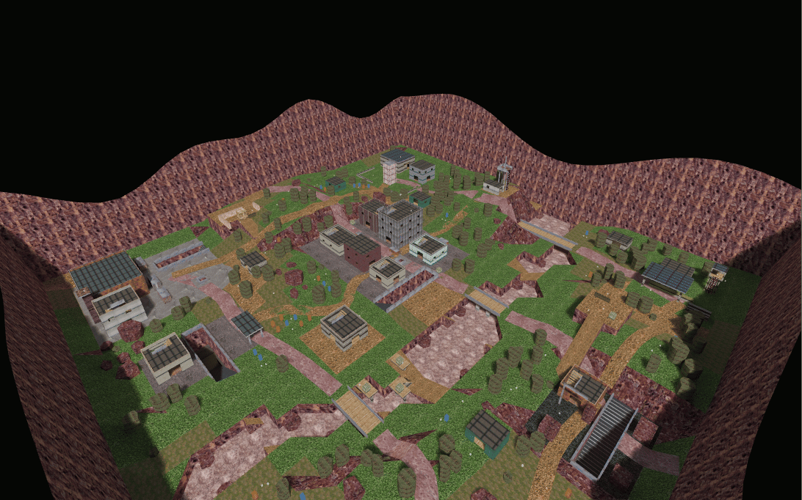
Start it
- On Play, under Game mode, pick Battle Royale.
- Pick br_valley, or a stock map with a Battle Royale setup (de_aztec, cs_italy, de_dust2, de_inferno, de_train). Maps starting with
br_pick the mode by themselves. - Bots fill the server. A game only starts once a person has joined, so bots don't play on their own.
How a game goes
- Drop in: you start high over the map and fall slowly. Steer to where you want to land; landing doesn't hurt. On stock maps the sky is low, so the drop is short.
- Loot-up time: for the first few seconds nobody can hurt anyone. Grab what you can.
- The zone: after a while it starts closing. The round clock counts down to each change. br_valley's zone closes in six stages.
- Supply drops land during the game with the best loot.
br_valley
A river valley by day, about 180 metres a side, with a town (the town hall's roof has a sniper rifle), a factory, a farm, radio hill (the best crate on the map), docks, a gas station, a quarry, a bunker with the best loot, a lumber camp, cabins and woods. Three bridges and two fords cross the river, with tunnels underneath. It plays best with 16 to 28 players: fill the rest with bots.
Settings
F3 (or say /br):
| Setting | Choices |
|---|---|
| Squads | Solo, Duos or Squads of 4. Squad mates can't hurt each other. |
| Start with | Knife, or knife and a pistol |
| Loot-up time | 10, 20 or 40 seconds |
| Zone starts after | 20, 40 or 90 seconds |
Times scale with the number of players, so a small game is a quick one.
Bots in Battle Royale
Each bot plays by its playstyle. Rushers and knifers hunt, roamers and objective players loot, and campers, AWPers and lurkers find a spot and wait. They pick where to land the same way: looters go for a good crate, campers for the edge of the map.
Game modes
Deathrun and Surf
Two classic movement modes the bots now play themselves. Install them from Mods, like the other community modes.
Deathrun
One player is the trap activator; everyone else runs the course. Bot runners make their own way through: jumps, beams, ladders, and waiting for a trap to pass. A bot activator walks to the buttons and presses them like a person would: sometimes early, sometimes late, sometimes waiting to catch more runners, with the odd line in chat.
In F3: Bot springs traps, Bot trap eagerness (Low, Normal or High), Runners get a USP and Extra lives.
Surf
Air control, free guns and long rounds. Bots walk off the start, strafe into each ramp they reach and keep their speed in the air, instead of standing still. Whole routes through a course aren't in yet: on long courses they ride the ramps they find.
Maps pick their mode
A map's name picks its mode: deathrun_ maps load Deathrun and surf maps load Surf, like ls_ and br_ do for the new modes.
The bots
Bot styles
A bot style sets who's in the lobby: how good they are, how they play and how much they talk. Pick one on the Bots page.
| Style | What it's like |
|---|---|
| Pub server | The default. A typical public server: a few sharp players, most average, some bad |
| Newbie lobby | New players: slow to react, they spray and miss a lot |
| Mixed lobby | Everyone different, from new to very good. A regular keeps their level |
| LAN party | Friends at a LAN: every level, lots of banter, and they play together |
| Matchmaking | Solid players who work as a team |
| Veterans | Experienced: quick, accurate, short bursts |
| Old-timers | Good aim, slow and methodical. They camp a lot and rarely talk |
| Locked In | Very good and focused. They bunnyhop between fights |
| Hackers | Suspiciously good: most bullets find you and they notice you from behind |
| Gods | Everything maxed. Nearly every bullet near you is a headshot |
| Original | The game's stock bots, unchanged: robotic and predictable |
Skill, style and personality
Three settings decide who you're playing with, and they work together:
- Bot style picks the kind of lobby: which sorts of players turn up and how they play, as in the table above.
- Difficulty picks how strong that lobby is. Each style has its own range of players, and Difficulty decides which of them join: Easy brings in that style's weaker players, Expert its strongest. A Pub server on Expert is a strong pub, not a different lobby.
- Personality decides how much each bot's own character shows. On Plain they play to their style; on Normal each bot's own habits lead; on Exaggerated their quirks show at full strength.
Every bot keeps its own skill. It sets how fast they react, how quickly and accurately they aim, how well they read a fight, how long they remember where you were, and how sensibly they decide what to do next.
Every bot also has a playstyle, which shapes what it tends to do in each of those moments:
| Playstyle | How they play |
|---|---|
| Rusher | Pushes first and goes back in after a fight |
| Roamer | Wanders the map looking for fights |
| Lurker | Goes round on its own and catches people from behind |
| Careful | Checks every angle, holds, and keeps an eye on where it last saw you |
| Camper | Picks a spot and stays there |
| AWPer | Buys the AWP and holds long angles |
| Knifer | Loves the knife, even when it shouldn't |
| Nader | Throws a lot of grenades |
| Ninja | Sneaks: slow, quiet, goes for the bomb when nobody's looking |
| Objective | Goes for the bomb or the hostages before anything else |
| Odd guns | Buys the weapons nobody else does |
How these show in a fight is on How the bots work.
Every bot is someone
Each bot has its own personality, mood and skill. They tilt, panic when flashed and back off when outnumbered. About 1,600 regulars return with the same names, some in clans, and remember you.
Bots play as a team in 5v5 matches, Base Builder, and the Classic mode with the Matchmaking style. Everywhere else they play as individuals, the way a pub does.
The bots
How the bots work
Loner-Strike's bots run on our own bot brain. Each one sees, hears, aims and decides the way a person in its place would, at its own skill and in its own style. Nothing they do is scripted per map.
The ideas behind them
The brain takes the best ideas from games known for their AI and puts them in Counter-Strike:
- Killzone: like Killzone's soldiers, they work out sightlines and cover for every spot on the map ahead of time, so they know where they can be seen from and where's safe.
- Quake III: Quake III's bots studied each map before playing it. Ours do too, and add angles, corners and the spots bullets go through walls.
- Unreal Tournament 2004's BotPrize: that contest judged bots on whether players could tell them from people. Same goal here: aim with small misses, hesitation, nerves, and mistakes that fit their skill.
- F.E.A.R.: its soldiers felt smart because they planned and talked to each other. Ours decide from what's really happening and call it out in chat and on voice.
What none of those did: each bot knows only as much of the map as its skill would, wallbangs follow Counter-Strike's real bullet penetration rules, every bot has a personality and a memory of the people it plays with, and you can give them orders by typing or talking.
They only know what you would
A bot has no wallhack. It knows where you are because it saw you, heard you, saw you on the radar or in the kill feed, or a teammate called you out. It forgets over time, the newer ones sooner. Sounds point roughly where they came from, not to the exact spot.
How they see
- They see you when your eyes, chest, sides or feet are in view. A gun barrel, a shoulder or a foot sticking out past cover can be noticed too: the better and more watchful ones catch it, newer ones mostly don't.
- Someone still and far off, or at the edge of the view, takes longer to notice than someone running across in front of them.
- They turn away from a flashbang they see coming, then look back to where it came from. A flash they didn't see blinds them like it blinds you.
- Smoke blocks their view. They don't see through it.
How they aim
Their aim is modelled on a hand on a mouse: still most of the time, then a flick that lands a touch off and gets corrected. They react after a moment, not instantly. Better players react sooner, flick faster and land closer; newer ones turn slower and miss more. They aim around head height, and at the head when that's all that shows over cover.
How they fight
- Each bot has its own habit for stopping to shoot: a quick counter-strafe for the good ones, a walk or a crouch for others, and some just run and gun.
- They spread out instead of stacking on a teammate, take cover, reload out of sight when they can, and switch to the pistol up close.
- The better ones shoot through doors, crates and thin walls when they know someone is behind them.
- Out of bullets, they stay out of fights and look for a gun on the floor.
How they decide
When a bot backs off from someone, it remembers where they were and how many it saw, and keeps an eye on that spot. Then it decides what to do about it: hold from cover, take another angle, go back in with a teammate, go round, or fall back to the team. It weighs what it knows (how many, their guns, its own health and ammo, who's nearby, the bomb and the clock). Good players weigh all of it and pick the sensible thing; newer ones go more on nerves and often forget. A spot where a teammate died is remembered as dangerous for a while.
Playing as a team
In team modes, Ts gather out of sight and take a site together, with someone going in first and others trading. CTs hold sites, rotate when one is hit, and retake. They trade kills, call out what they see, and follow your team chat and voice commands.
Who they are
Every bot has a skill level and a personality, and both shape every choice above. Rushers push and go back in, careful players and campers hold, lurkers go round, team players wait for help and call things out. Their mood changes too: they tilt after losses, crack under pressure or tighten up, depending on who they are. The same bot plays the same way each time it shows up. The playstyles and settings are on Skill, style and personality.
Every mode
In deathmatch and Gun Game they play for themselves and keep moving. In team modes they play the objective: planting, defusing, rescuing hostages, or saving their gun when a round is lost.
The bots
Bot settings
Everything on the Bots page. Change them before a game or during one. Reset bot and fun settings, at the bottom, puts them all back to the defaults and keeps the bot count.
How many
The Bots slider sets how many; each one takes a player slot. Add a Terrorist, Add a Counter-Terrorist, Kill all and Kick all are beside it.
Bot count mode decides how that number is kept: a fixed number, filling the server, or a number per human. If the count keeps changing, that's why.
Skill and style
| Setting | What it does |
|---|---|
| Difficulty | Easy, Normal, Hard or Expert: how strong the lobby is within its style (how it works). Hard to start with. Changing it adds the bots again |
| Bot style | Who's in the lobby (the styles) |
| Auto difficulty | Adjusts their skill to how you're doing |
| Personality | How much of each bot's character shows, from Plain to Exaggerated (more) |
| Lobby mood | Friendly, Normal or Toxic |
Chat
| Setting | What it does |
|---|---|
| Bot chat | Off, Now and then, Normal or Chatty. Normal to start with. Off means they don't listen either |
| Bot chatter | Their radio voice lines ("Enemy spotted"), separate from typed chat |
| Bots answer you | They answer and follow what people say in chat (what they understand) |
| Bots can be rude | Off by default, so nobody gets insulted |
| Dead bots' chat | Everyone sees it, or only the dead, as in the real game |
| Bots stop to type | They stand still for a moment to type, like people |
| Bot names | Regulars and clan tags, or the game's own names |
| Players come & go | Bots leave and new ones join, like a real server |
The rest
Further down: how human they play, their quirks, and server life. Each switch has a note in the app.
The bots
Talking to the bots
Type in team chat and they answer, or do what you ask.
How they listen
- Any wording close to the examples below works.
- Start with a bot's name to ask just that one. A short form or nickname works.
- The whole team hears a call, and each bot decides for itself by its personality: a lurker may ignore "rush b", a rich one may buy you that AWP. Only one bot ever buys you something.
- A bot only says yes when it actually does it.
- They also react to chat that isn't an order: praise, trash talk, "gg", someone who's tilted.
What you can say
| For | Say |
|---|---|
| Moving | go b, rush a, split a, everyone mid, go b slow, fake b, fall back, watch flank, follow me, trade me, come here, wait here, nvm |
| Buying | eco, force, full buy, someone buy me an awp, drop me an ak, give me the bomb |
| Grenades | flash for me, flash long, smoke mid, nade them |
| Callouts | two long, awp mid, they're all b, bomb b, one short he's low |
| The bomb | plant b, plant here, go defuse, where's the bomb |
| Questions | money?, hp?, what gun?, how many left?, where'd they go, where are you?, who killed me, who has awp?, are they eco? |
| Just for fun | jump, crouch spam, spray that wall |
The app lists all of this too, in What you can tell the bots, its own section on the Bots page.
When they don't answer
- Check Bots answer you is on, and that you're typing in team chat for orders.
- With Bot chat Off they don't listen at all. Set low, they still follow orders but say less.
- Lines starting with
/or!are commands, so bots ignore them. - Someone sending lots of lines in a few seconds makes them stop listening for a bit.
- A dead bot can't go anywhere. It may still answer.
The bots
Voice commands
Bots understand voice chat the same as typed team chat. It works on dedicated servers only, not in games hosted from Play.
Hold your voice key and say "rush b" or "Derek, flash for me". Loose wording works too, like "can somebody get over to B real quick". Anything that isn't an order reaches the bots as said, and they answer in team chat.
Set it up
- Open the server's Bot voice commands tab. For a server on this computer, click Install first: about 500 MB of models, once for every server here.
- Turn on Bots understand voice chat. On a Linux server this puts the models on the machine, which takes a few minutes.
- Join the server and talk on your team's voice chat.
Privacy
Speech is turned into text on the machine running the server. No audio is kept or sent anywhere; the lines it heard are in the server's log, shown under What it heard. Only teammates reach the bots, and muted players and filtered words are left out.
Remove it
On this computer, Remove in the same tab turns voice off on every server here and deletes the models. On a Linux server, turn the switch off.
When it doesn't work
- Check the server's Bot voice commands tab says On, and listening. What it heard shows each line it understood.
- Nothing there means your voice isn't reaching the server. Check voice chat works for other players, and that
sv_voiceenableis1. - It only works on dedicated servers, and only for your teammates' bots.
- "Voice stopped by itself": turn it off and on again. Its log under What it heard may say why.
- "Port … on this computer is in use": another program has the voice port. Close it, or restart the computer.
- "can't use sudo without a password" (Linux): connect as
root, or give the user passwordless sudo. - Heard wrong? Speak a little slower and start with the order: "rush b", "flash long".
Create
The Tools
Everything for making things, in the app's sidebar under Tools. They're new in 1.0 and marked Beta while they settle in.

What's in it
| Group | Tools |
|---|---|
| Create | Map editor, Game Mode Studio, Creature Studio, Plugin Studio |
| Map tools | Map doctor, Map simulator, Nav fixer, Callouts, Radar maker |
| Personalize | Crosshair & config, Bot people, Spray maker |
| Watch & inspect | Map viewer, Replay, Demos, Textures & models |
| Share | Community |
Getting around
- The bar at the top shows where you are, like Tools › Nav fixer › de_dust2. Click a part to go back to it, or use Back.
- ? shows the keys for the page you're on. / jumps to the page's search box.
- Focus (Shift Cmd Enter, Ctrl on Windows) hides everything but the tool.
- A tool opens on the map you last used it on.
Your files are backed up
Tools that change a file in your game (a nav, a map's overview, your config, your spray) back up the old one first, and most have Put back the previous file in their More menu. Still, while they're Beta, keep your own copy of work you care about, and tell us on Discord when something's off.
Create
Map editor
Build Counter-Strike maps with brushes and entities, like Hammer, in one 3D view. Draw boxes, push and pull their faces, place spawns and lights, paint textures. Your map is checked as you go.

Start a map
Open Tools › Map editor. The start screen has:
- New map: an open-sky room with two spawns for each team, ready to build in.
- Open a project: a map you saved before (
.lsmap). Recent lists the last ones. - Import a .map and Import from Hammer / J.A.C.K.: see Importing.
Your work is saved every 3 minutes while you have changes. If the app closed with unsaved work, the start screen offers Recover it. Each save also keeps a copy of the one before.
Moving around
The first time, the editor asks How should the 3D view move? Pick what your hands know. Change it any time in View.
| Preset | How it moves |
|---|---|
| Unreal | Hold the right mouse button to look; with it held, W A S D fly, Q and E go down and up, Shift is faster and the scroll wheel changes speed. Alt-drag orbits, middle-drag pans. |
| Blender | Left-drag orbits, right-drag pans, scroll zooms. F switches to flying with WASD; Esc lets go. |
| Hammer | Z turns mouse-look on and off, WASD to move while it's on. Left-drag on empty space looks, right-drag moves forward and back. |
In every preset, F frames what's picked, and Ctrl plus 1 to 9 keeps a camera spot that 1 to 9 jumps back to. ? lists every key.
Views and panels
- Single, Quad, 1+3 and Two (top right, or Alt 1 to 4) set the views. Quad is 3D, Top, Front and Side, like Hammer. Each view's corner picks what it shows and how it's drawn.
- The panels (Inspect, Outline, Textures, Library, Checks, Compile, Project, History) can be dragged to another side or floated. View has layouts like Hammer and Unreal-like, and Reset the panel layout.
- Find a command (Cmd K) finds anything in the menus by name.
- Prefer Hammer's or TrenchBroom's keys? Help › Change keys… has both.
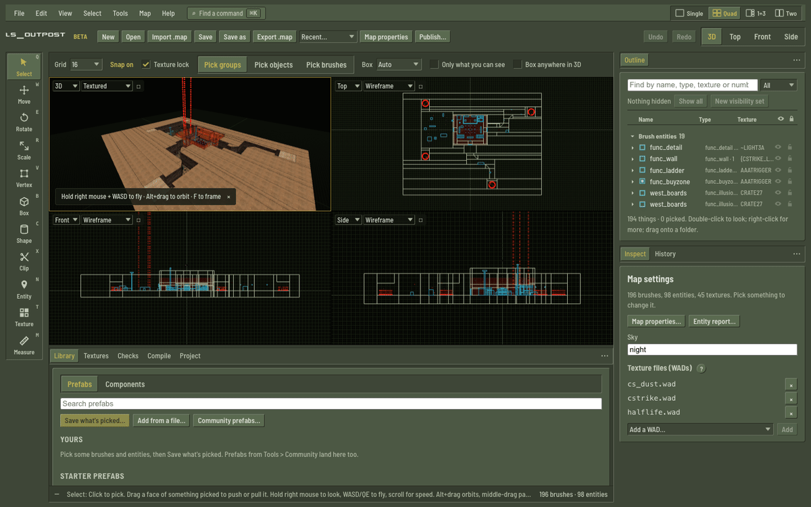
Building
| Tool | Key | What it does |
|---|---|---|
| Select | Q | Click to pick. Drag a face of something picked to push or pull it. |
| Move, Rotate, Scale | W E R | Drag the arrows, rings or handles. |
| Vertex | V | Drag a corner, an edge or a face. Brushes stay convex. |
| Box | B | Drag on the floor, or on top of a brush, to draw a box. |
| Shape | C | Cylinder, wedge, spike, sphere or arch. |
| Clip | X | Click two points; Tab picks which side stays, Enter cuts. |
| Entity | N | Click a surface to place a spawn, light, weapon or anything else there. |
| Texture | T | Pick faces and slide, turn or stretch their texture. Alt-click picks a texture up. |
| Measure | M | Drag between two points. |
- Snapping is on, to a 16-unit grid. [ and ] change the grid; hold Alt to ignore it for a moment.
- Edit has the modelling moves: Hollow (Cmd H), Carve, Merge, Duplicate, Paste special… (copies in a row, ring or spiral), Group, and Tie to entity to make a door or a func_wall.
- Select has Select same texture, Hide (H), Hide everything else and Lock.
- Copy and paste work between maps, and with other editors: copies travel as .map text.
Textures
The Textures panel shows every texture in the map's texture files (WADs). Click one to choose it; double-click to paint what's picked, or press Shift T. The Texture tool's sheet sets shift, scale and turn, fits a texture to a face, and lines textures up like a floor or along a slope. Texture lock keeps textures in place when you move a brush. Add texture files in Map properties.
Entities
Pick an entity and Inspect shows a form for it: choices, colour pickers for lights, an angle dial, flags, and help on every key. Links between a target and a targetname are drawn as lines in 3D. Pick several entities to change their keys together. Spawns, hostages and weapons are drawn as their models. Using a mod's own entities? Map properties › Entity definitions takes its FGD file.
Prefabs
The Library panel has starter prefabs (a doorway, stairs, crates, a ladder, a window, a bombsite kit, a buy zone with spawns, a light). Drag one in, or press Place and click: they stand on floors, hang from ceilings and face out of walls, and R turns them while you place. Pick something you built and Save what's picked… to make your own. The Components tab places Loner-Strike's game mode pieces, like wave spawners and loot crates.
Checks as you go
The Checks panel looks over the map after every change: broken brushes, things outside the map's limits, too many of something, missing textures, missing spawns, targets that point nowhere. Click a problem to go to it; most have a fix button, like Place a CT spawn or Add halflife.wad and cstrike.wad. Leaks are found when the map is compiled.
Saving and exporting
- Save keeps a project (
.lsmap) with everything the editor knows, like groups and hidden things. - Export .map (Cmd E) writes a Valve 220 .map with its texture list, for any GoldSrc compiler or editor.
- Publish… packs a compiled map for Community.
Create
Compile and playtest
Turn your map into a .bsp the game can load, then play it with bots, from the editor's Compile panel.

The compiler
Maps are compiled with SDHLT, a free GoldSrc map compiler (about 3 MB). It isn't part of Loner-Strike: the first time, the panel offers Download SDHLT, which fetches it from its official GitHub release and checks it. Its licence is in the panel.
- Windows: it runs directly.
- Mac: it runs through CrossOver, in the same bottle as your game. The first compile takes a little longer.
Compile
- Give the map a Map name: letters, numbers,
_and-, up to 31. - Pick the quality. Fast skips the visibility pass and does quick lighting, for trying things out. Normal is how most maps are tested. Final is full quality, for release; it's slow on big maps.
- Press Compile. The steps show as they go: brushes, building the map, what can be seen from where, lighting.
Texture files that aren't the game's own are packed into the .bsp, so players don't need them. Use all cores is faster but the computer may lag; without it, the compiler leaves you some room.
When it finds a problem
Problems come in plain words, and clicking one picks the brush or entity it's about.
- The map leaks: there's a gap between the inside and the void. Show the leak line draws a red line from an entity to the gap; follow it and close the gap with a brush.
- Nothing inside: put a player spawn inside a sealed room.
- A missing texture or texture file: add the WAD in Map properties, or replace the texture.
- Too many faces or another limit: cover faces nobody sees with
NULL, or simplify.
Compiler output has the compiler's full log if you want it.
Compile part of a map
On a big map, Cordon compiles only what's inside the boxes you draw, sealed off with sky or black walls. Lights near the box come along, and a playtest puts you inside it.
Playtest with bots
- In the Playtest part of the panel, pick the Mode and how many Bots.
- Leave Teach bots the map first ticked: a hidden server loads the map and a bot walks it, so the others know where they can go (about a minute).
- Press Playtest. It compiles, puts the map in your game (backing up any map with the same name) and starts it with bots.
If the game is open, it asks before restarting it. The game's own maps can't be overwritten: give yours another name.
After a playtest
- Bots got stuck? Run the Map simulator, then fix the spots in the Nav fixer.
- Name the places with Callouts and make its overview with the Radar maker.
- Happy with it? Publish it.
Create
Hammer and J.A.C.K. maps
Bring maps you made in another editor into the map editor. The original file is never changed: saving makes a new project.
What it opens
| File | From | How |
|---|---|---|
.rmf | Valve Hammer Editor (3.x) | Import from Hammer / J.A.C.K. on the start screen, or File › Import a Hammer .rmf or J.A.C.K. .jmf… |
.jmf | J.A.C.K. | The same |
.map | Any GoldSrc editor, including TrenchBroom | Import a .map |
What comes over
- Brushes with their texture alignment, entities and brush entities.
- Groups (TrenchBroom's too), and visgroups as visibility sets in the Outline.
- Paths, as linked path_corner or path_track entities.
Left out, and the import says so: saved cameras, background pictures, the cordon and J.A.C.K.'s curved patches (GoldSrc maps can't use them).
Texture files
Hammer and J.A.C.K. keep the list of texture files outside the map. The editor looks for WADs beside the file you imported and in your game folders. If textures show as missing, add the WADs in Map properties; the compiler also finds WADs that sit beside the map or its project.
Before you compile
Importing is new. Look the map over and open Checks before the first compile, and keep your original file. If something came over wrong, a copy of the file in a GitHub issue or on Discord helps us fix it.
Create
Game Mode Studio
Make a game mode out of nodes, in the style of Unreal's Blueprints: when something happens (a round starts, a player dies), check things and do things. The Studio turns your graph into a plugin, and Playtest starts the game in your mode with bots.

Start a mode
Open Tools › Game Mode Studio and start from a template or from nothing:
- Rifle Reward: every kill earns the killer a rifle. Small, and a good first read.
- Last Stand: everyone defends against creature waves; between waves, money and a shop.
- Battle Royale: everyone for themselves, a shrinking zone, loot.
- Blank mode.
Name it and it's saved straight away. Your modes lists them.
The editor
- My mode (left): the mode's events, functions, macros, variables, structs, enums and snippets. Drag a variable onto the graph to get or set it.
- The graph (middle): the Event Graph tab, plus a tab for each function or macro you open.
- Details (right): help and settings for the picked node, or the mode's name, description and game settings.
- Results (bottom): Problems, which you click to jump to the node, and Compiler output.
Nodes and wires
- Right-click or press Space to add a node. Drag from a pin to empty space and the list only shows nodes that fit that wire.
- White pentagon pins carry the flow (what runs next); round pins carry values, coloured by type.
- C adds a comment box, double-clicking a wire adds a reroute point, and Tidy up lays nodes out left to right.
There are over 200 nodes. The main kinds:
| Kind | For example |
|---|---|
| Events | Round Started, Player Killed, Player Spawned, Player Hurt, Bomb Planted, Chat Command, Player Revived |
| Flow | Branch, Sequence, Do Once, Gate, For Each Player, For Loop, Switch on Number |
| Players | Give Weapon, Set Health, Give Money, Set Team, Teleport, Freeze, Respawn, Set Glow, Make Downed |
| Timers and the round | Delay, Repeat, Countdown, Set Timer by Function, Set Round Clock, End Round |
| Damage | Block Damage, Scale Damage (after Player About To Be Hurt) |
| Squads and buying | Set Squad, Squads Left, Allow Buying |
| Messages | Show Message, Show HUD Text, Chat Message, Menu, Play Sound |
| Bots | Bot Go To, Bot Hold, Bot Follow, Bot Free |
| Components and creatures | Zones, crates, waves, doors, traps, supply drops; Spawn Creature, Creature Killed |
| Saved | Numbers kept between maps and restarts |
Variables, functions and macros
- Variables hold a number, yes/no, text, player, team, vector and more, for the whole mode, each player or each team, kept for the map or reset each round. Lists and maps of values work too.
- Functions are pieces you call from several places, each on its own graph with inputs, outputs and local variables. They run straight through, so waiting nodes like Delay go in a macro instead.
- Macros are pieces copied in where they're used, with several flows in and out.
- Structs group values (a loadout: weapon and ammo); enums are named choices (a class: scout, tank, medic).
- Pick some nodes and Collapse to Function or Collapse to Macro to tidy a graph.
Snippets
The Snippets section has ready-made pieces to drop in: a wave system, a shop menu, a shrinking zone, revive, a kill reward, a round timer win, teleport on touch and more. Each arrives in its own comment box, and its variables join yours. Pick some of your own nodes and Save the selection as a snippet to reuse them.
Install and play
Install builds the plugin and adds your mode to the game's mode list, so it's on the Play page and in the F3 menu like any other. More › Remove from the game takes it out. More › Show code shows the plugin your graph becomes, and Open in Plugin Studio lets you carry on in code.
To test while you build, use Playtest.
Share a mode
Publish it from Tools › Community › Publish › A game mode. Only the graph goes in the package: each player's Loner-Strike builds the mode on their own computer, so nothing that runs code is shared. Others can Remix in Game Mode Studio, and you keep the credit. See Publishing.
Create
Playtest and debug a mode
Run your mode in the game with bots and watch the graph while it plays.
Playtest
- Pick a map and the number of bots in the Studio's toolbar.
- Press Playtest. It saves, compiles with the debugger, checks the game and starts it in your mode. Problems have to be fixed first: they're under Results.
- If the game is already open, it asks to Switch the open game to your mode: a map change, and the bots stay.
The first start can take a minute (Steam, CrossOver on a Mac, the map). The panel says Playing on the map once it's connected.
Watch it run
- Nodes light up as they run, and wires show the way the last flow went. A condition that came out false, and a node with an error, are marked.
- Hover a pin to see the last value the game saw there. Players show like Name (team, 87 hp, ak47).
- Details shows Last time it ran for the picked node: how often, the result and the inputs.
- What happened lists the last 40 things that ran.
Breakpoints
Click the dot on a node, or press F9, to pause the world when it runs. Everyone freezes and the round clock stops; Live values shows the round, the time left, who's alive, your variables and every player's health and weapon. Press Resume to carry on. Only the world pauses: there's no stepping through one node at a time.
Good to know
- Menus need a person to answer them: bots won't.
- A mode can have up to 400 nodes and 64 variables, plenty for most modes.
- Component and creature nodes need Loner-Strike's game mode pieces on the server, which your own game has.
Create
Plugin Studio
Write AMX Mod X plugins with suggestions and docs as you type, then try them in your game in a click.

Your plugins and the game's
- My plugins are yours to change. New plugin starts one from a template: an empty plugin, a new game mode, a chat command, on player killed, give items on spawn, a HUD message, a menu or a timer.
- Game's plugins and Include files are read-only. Save a copy in My plugins… to make your own version.
- Saving keeps the version before; More › Restore a previous version… brings one back.
Writing
- Suggestions come as you type: functions with their parameters, forwards, constants and include names, read from your game's own include files.
- Hover a function for its docs, and F12 (or Ctrl-click) opens where it's defined.
- Type / at the start of a line, or use Insert…, for snippets and templates.
- Help & docs searches every function, with Put it in my code.
Compile and try it
- Compile (Cmd Enter) checks it. Errors are explained in plain words, marked on their lines and listed under Problems.
- Try it in my game compiles it, puts it in your game and restarts the map. Game log shows that plugin's messages and errors.
- Take it out removes it again.
Trying a plugin works on your own game, not on servers. Plugins can't be shared in Community; a mode made in Game Mode Studio can.
loner.inc
Loner-Strike's include file gives you short ways to do the usual things. In Plugin Studio, #include <loner> just works.
| For | Natives |
|---|---|
| Modes | ls_register_mode, ls_mode_active, ls_mode_current |
| HUD and chat | ls_hud (four slots other plugins don't wipe), ls_announce, ls_chat |
| Players | ls_give_weapon, ls_strip, ls_set_health, ls_set_armor, ls_teleport, ls_set_team, ls_count_alive |
| Roles | ls_set_role, ls_is_role, ls_count_role |
| Timers | ls_after, ls_every, ls_stop, ls_countdown |
| Bots | ls_is_bot, ls_bot_goto, ls_bot_hold, ls_bot_follow, ls_bot_release |
| Components | Zones, doors, waves, loot and more, with forwards like ls_on_wave_start and ls_on_capture |
A whole mode in a few lines:
#include <amxmodx>
#include <hamsandwich>
#include <loner>
public plugin_init()
{
ls_register_mode("deagleduel", "Deagle Duel", "1.0", "me")
RegisterHamPlayer(Ham_Spawn, "on_spawn", 1)
}
public on_spawn(id)
{
if (!ls_alive(id) || !ls_mode_active())
return
ls_strip(id)
ls_give_weapon(id, "deagle", 35)
ls_set_health(id, 150)
ls_hud(id, LS_HUD_LEFT, 5.0, "Deagle Duel^nLast one standing wins")
}The full reference is LONER-INC.md on GitHub, and it's also under Help & docs in Plugin Studio.
Create
Creature Studio
Make the creatures modes throw at you, like zombies, aliens, animals, turrets and bosses, and the waves they come in.
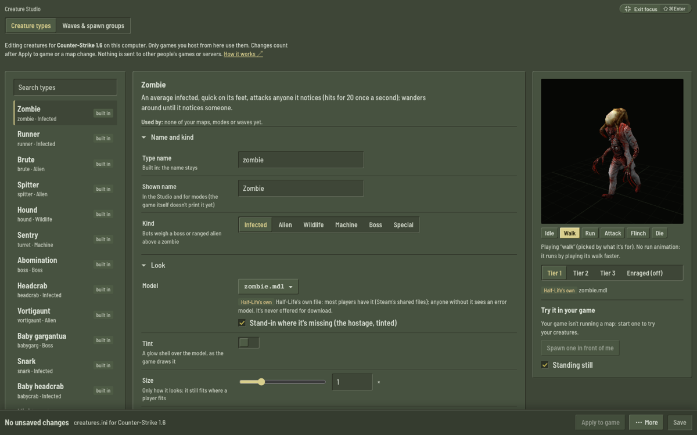
Creature types
- Pick a type on the left. The game has eight built in (zombie, runner, brute, spitter, hound, turret, boss, headcrab). New from a template… makes your own from one of them; Duplicate copies one.
- Change it, section by section: Look (model, size, tint, blood), Health and speed, Senses (how far it sees and hears), Attack (melee or ranged, damage, rate), Behaviour, Sounds and Rewards.
- The preview plays its animations: idle, walk, run, attack, flinch and die.
- Save and apply to game. With the game running, Spawn one in front of me tries it out.
Behaviour sets how it acts: stand still, wander, patrol, guard, hunt as a horde, or keep away; who it goes for (nearest, weakest, last attacker); and whether it runs when hurt. New models and sounds load on the next map.
Waves
Switch to Waves & spawn groups and pick the mode (Last Stand reads its own). Set which type is the Boss and how often it comes, how many enemies a wave has and how much health they get, and The mix: which creatures come in which waves. Start from the mode's own mix is a good place to begin. Save waves when you're done; Place in map… opens the map editor to put spawners where you want them.
Map tools
Map doctor
Check a map's files without playing it: missing textures, models and sounds, the download list and the bots' nav, with fixes. To see how bots actually play a map, use the Map simulator.
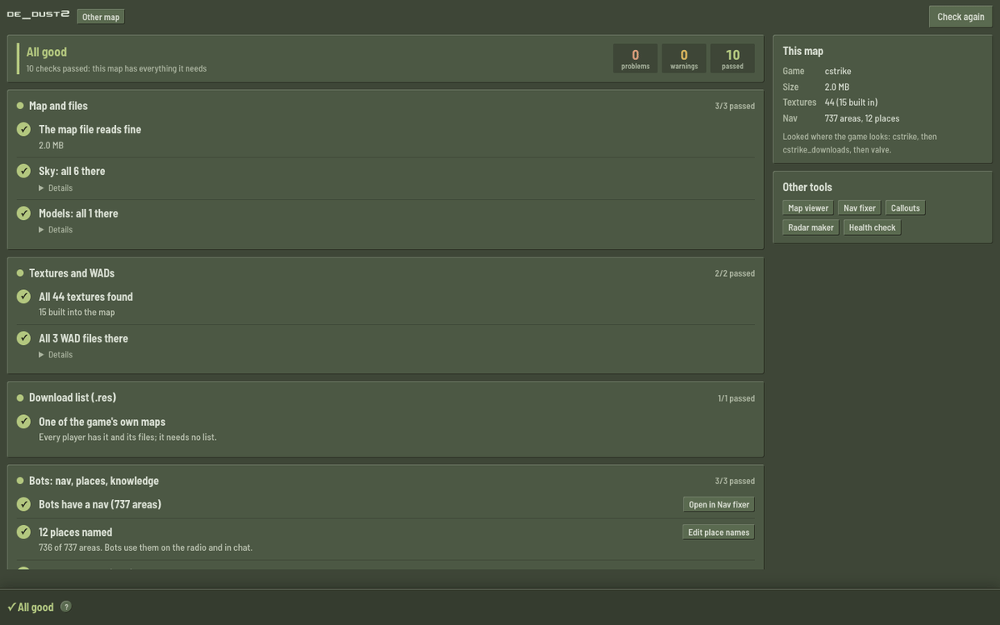
- Pick a map. The list marks the ones with No bot nav.
- Read the verdict. Needs a look shows only the problems; All checks shows everything: the map and its files, textures and WADs, the download list (.res), the bots' nav, places and knowledge, and the overview.
- Use each check's fix: copy missing files from another game folder, Make the list for downloads, Teach bots this map, Search GameBanana, Name places or Make one (an overview).
- Fix all safe does the fixes that can't hurt in one go. Check again when you're done.
Map tools
Map simulator
Bots play a match on a map for a few minutes on a hidden server. The report shows on the map where they fight, die, fall, get stuck and never go, who wins rounds, and any errors.
- Under Simulate a match, pick a map. It needs a bot nav, so teach bots the map first if it hasn't one.
- Pick the Game mode, How long (2 to 15 minutes) and how many Bots. Longer runs give fairer round and side numbers.
- Close the game and your servers, then Run the simulation. You can leave the page while it runs.
- Read the report: Looks fine, Worth a look or Problems, with what to look at in plain words.
- The map shows the match from above. Switch between Where bots went, Where they died, Where kills came from and Where nobody went (nav areas no bot walked). Pins mark falls, stuck spots, deaths to the map and the busiest fights. Point at the map for the numbers there; scroll to zoom.
- Rounds and sides shows how many rounds each side won, kills by side and how long rounds last. Where fights happen lists the map's choke points as the bots play it, and the places nobody went.
- Watch in Replay to see it happen. Earlier simulations stay listed.
Not the same as the Map doctor, which reads a map's files without playing it. A good simulation earns a map the Checked with bots badge in Community.
Map tools
Callouts
Name places on a map, so bots say where they are and understand where you mean.
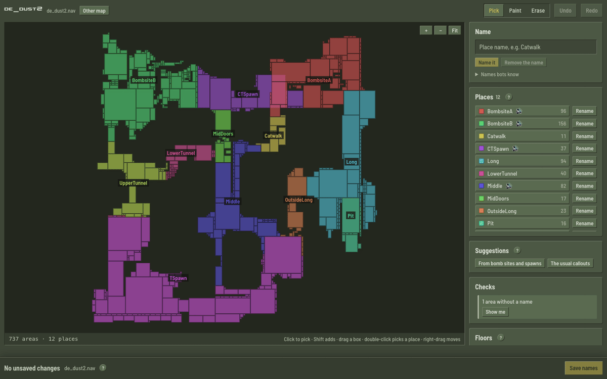
- Pick a map with a bot nav.
- Type a place name (like Catwalk) and paint it onto the map with Paint (P). Erase (E) takes it off.
- Or start from Suggestions: from bomb sites and spawns, the usual callouts, or Condition Zero's.
- Save names. Names don't move anything, so the bots' knowledge of the map stays as it is.
Names bots know marks the ones bots say on the radio and the ones their chat understands, like "two long".
Map tools
Radar maker
Make a map's overview: the top-down picture spectators and HLTV viewers see, drawn from the map itself.
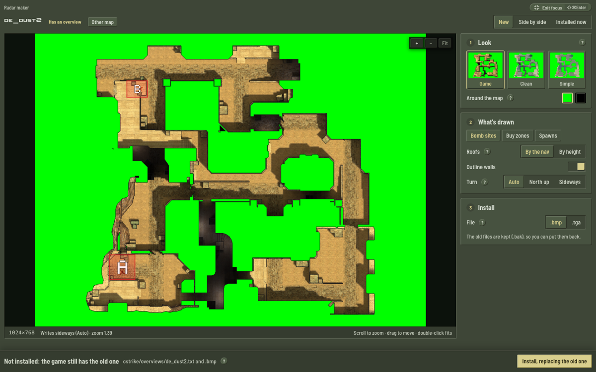
- Pick a map, then a look: Game, Clean or Simple.
- Choose what's drawn: bomb sites, buy zones, hostages and spawns, outlined walls, and whether to leave out roofs.
- Compare it with the one installed now, side by side.
- Install overview. The old files are kept, and Put the old one back restores them. Send it to players adds it to the map's download list.
The overview is what spectators see, not the small round radar you see while you're alive.
Personalize
Crosshair & config
Your crosshair, keys, mouse and connection settings, with the crosshair drawn live as you change it.
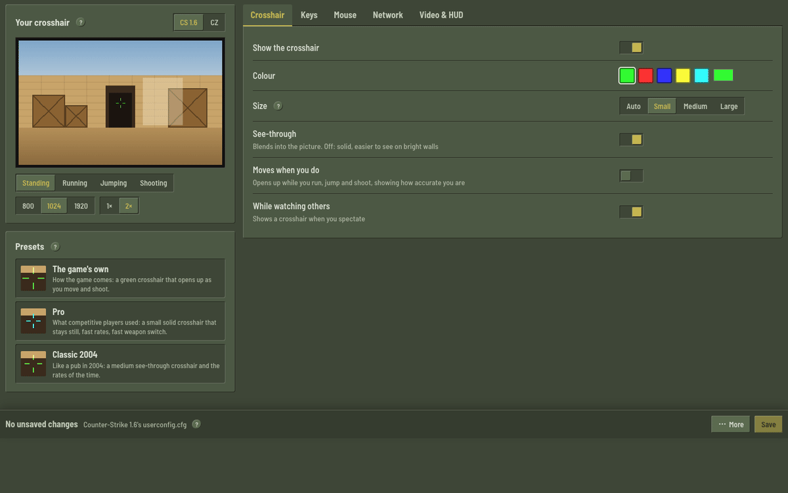
- Pick the game: CS 1.6 or CZ.
- Start from a preset if you like: The game's own, Pro or Classic 2004. A preset sets the crosshair, connection and weapon switch; your keys and sensitivity stay.
- Change things on the tabs: Crosshair, Keys (press a key's button, then the key), Mouse, Network, and Video & HUD. The preview shows the crosshair standing, running, jumping and shooting.
- Save. It goes into the game's
userconfig.cfg, in a block of its own; your own lines there are kept, andconfig.cfgisn't touched.
More › Take out Loner-Strike's lines removes it all again. F3 and F4 stay Loner-Strike's menus.
Personalize
Bot people
Decide who the bots are: kinds of people, how they play and talk, and the regulars' names.
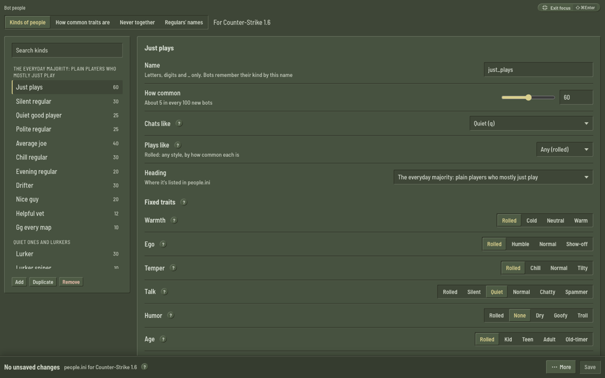
- Kinds of people: each kind has a name, how common it is (about how many in every 100 new bots), how it chats, how it plays, and traits that are fixed or rolled. Add, Duplicate or Remove kinds.
- How common traits are: a slider for each, and Never together for pairs that shouldn't meet.
- Regulars' names: the names bots use, and who has which. Fresh names for everyone starts over.
Save, and a running game picks it up straight away; name changes show from the next map. More has Import…, Export… and Start from Loner-Strike's. See Every bot is someone for how it all fits together.
Personalize
Spray maker
Make your in-game spray from your pictures, words and stickers, and see it as the game will draw it.
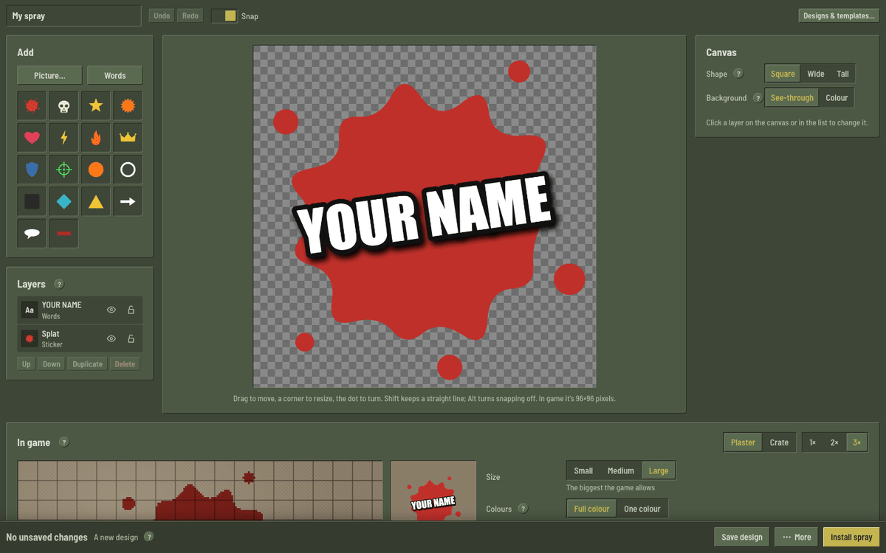
- Start from Designs & templates… (a name tag, a skull banner, a team badge, GG) or blank.
- Add layers: a Picture…, Words or a sticker. Move, turn and resize them on the canvas; pictures can lose their background, words get an outline and a shadow.
- Check it under In game on a plaster, sandstone or crate wall, at the size and colours the game will use.
- Install spray for the games you tick. Put back the previous one undoes it.
Watch & inspect
Map viewer
Walk around any map: spawns, doors, triggers, the bots' nav and what they learned about it.

- Camera: Orbit, Fly or Top-down.
- Show: textures, lighting (Like the game or Bright), spawns and items, doors and breakables, triggers and zones, and the Bots' nav.
- With the nav on, What bots learned shows their cover, what they see from where, wallbang spots, corners and the angles they watch.
- Click anything to see what it is, or find it in In this map.
- Go to takes coordinates or a link. Keep this view, Picture and Copy link save the spot.
Watch & inspect
Replay
Watch a recorded bot match in 3D: where every bot went, why, and where it fell.
- Pick a recording, newest first. The Map simulator makes one, or Open a recording… from a file.
- Play it at up to 16 times speed. The bar marks rounds, kills and falls.
- Click a player to pick them; double-click to Follow.
- Heat map shows time spent, deaths or where they got stuck.
- With a bot's trace recorded, you can read why it did what it did.
Watch & inspect
Demos
Your recorded demos and your servers' HLTV ones, in one list: what's in them, rename, delete, watch.
- Filter by All, Recorded in game or HLTV, or search.
- Pick one to see how long it is, when and where it was recorded, and who played.
- Watch it. A server's demo becomes Copy to my game and watch.
- Rename or Delete. The game can only play demos with plain names.
Record one in game with the app's Record demo button, or turn on HLTV on a server.
Watch & inspect
Textures & models
Browse every texture and model in your game, add your own or get more. Browsing changes nothing in your game.
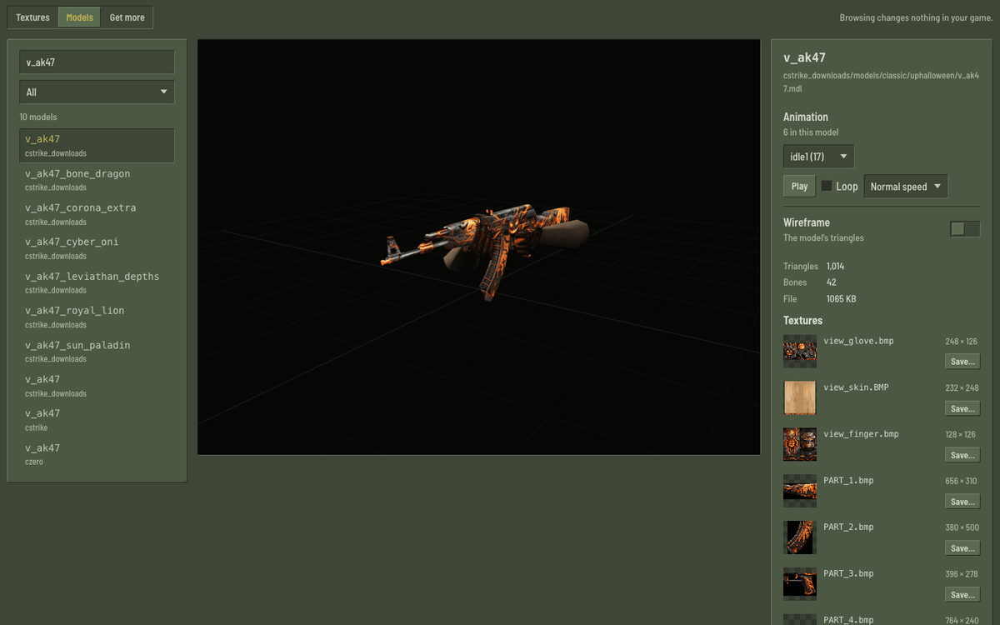
- Textures: search every WAD, see where a texture comes from and which of your maps use it, and Save as picture…. Make your own… turns a picture into a texture.
- Models: player models, weapons in hand, carried and on the ground, and hostages, in 3D with their animations and skins.
- Get more: Add a WAD… or Add a model… from your computer, or download from GameBanana. A file you replace comes back when you remove yours.
Multiplayer
Playing with friends
Friends only need Counter-Strike, not Loner-Strike.
Your game is the server. Friends join the game you're playing, so when you quit or your game crashes, everyone drops. For a bigger group or a whole evening, run a dedicated server: it keeps going on its own while you play like everyone else. Which should I use?
They join like any other server, and it sends them the maps, sounds and models. In the app, Play with friends sets your server's name and join password ("everyone who joins needs this"), and walks you through one of these:
| Way | When to use it |
|---|---|
| This network | Same Wi-Fi, or a LAN party |
| Direct | Over the internet, through your router. The app asks your router to open the port |
| playit.gg | Over the internet with nothing to open on your router |
| Tailscale, ZeroTier | A private network between you and your friends |
| Radmin VPN, Hamachi | The classic LAN-over-internet tools (Radmin is Windows only) |
Friends who can't get in: see Friends can't join. For a server that stays up with your computer off, see Servers.
Find a server to join
Counter-Strike's server browser, in the app:
- Internet: servers other Loner-Strike players put on the list.
- Favorites and History: servers you've saved or played on.
- LAN: games on your network.
Click Connect, or double-click a server, to play. Open its info to see who's on, with Join game there too. Filters narrow it by game, map, latency, servers with people, servers not full, and no password. To put your own server on the list, turn on On the Loner-Strike server list in its Who can join tab.
Multiplayer
LAN party
Everyone on the same Wi-Fi or router finds your server in the LAN tab, with nothing to install or open. Friends who can't make it can still join from home.
Your game or a dedicated server
| Host from | Best for |
|---|---|
| Your game | A few people, quickly. The game you play in is the server, so it ends when you quit or your game crashes |
| A dedicated server | Bigger parties, or a whole evening. It runs on its own, so map changes, your game restarting or you leaving don't drop anyone. Run it on your own computer or a spare one at the party |
From your game
- In Play with friends, pick This network. Set a server name and, if you like, a join password.
- Start a game from Play.
- Everyone opens Find Servers in Counter-Strike, then the LAN tab, and joins.
With a dedicated server
- In Servers, click New server and pick This computer.
- Under Who can join, pick This network: only people on your Wi-Fi or LAN can see it.
- Start it. You join it from the app like everyone else, with Join.
- Everyone else finds it in the LAN tab of Find Servers, or types
connectand the address the server's Who can join tab shows.
A dedicated server is also where voice commands work, and the bots keep the server full while people come and go.
Before everyone arrives
- Same game for everyone. A Condition Zero server needs Condition Zero; a 1.6 server needs 1.6.
- Firewall. Allow the game when Windows or macOS asks. On Windows, set the Wi-Fi to a Private network.
- Guest Wi-Fi networks often keep devices apart, so the server won't show up. Use the main network, or plug into the router.
Friends who can't be there
Everyone in the room needs nothing extra: the server shows up in their LAN tab on its own. Friends somewhere else can still join the party through ZeroTier, Radmin VPN or Hamachi. Everyone joins the same virtual network, and your server shows up in their LAN tab as if they were in the room. Playing with friends walks you through each.
Multiplayer
In-game commands
What players type in chat. The / is optional for most.
For everyone
| Type | What it does |
|---|---|
rtv | Vote to change the map. The vote picks the mode first, then a map that suits it |
nominate <map> | Put a map in the next vote |
rtm, nominatemode <mode> | Vote for, or suggest, a mode |
/report <name> <what happened> | Tell the admins about a player (one a minute) |
/rank, /top15, /statsme, /hp | Stats, and who hurt you |
/welcome, /rules | The server's welcome page and rules |
votekick, voteban | Start a vote against a player, when the server allows it |
/vips, /donate | Who's VIP, and how to support the server |
For the host and admins
- F3 (
/menu) and F4 (/q): see In the game. - VIPs, if their role allows:
/vip,/noclip,/god,/respawn,/saveand/tp.
5v5 matches
| Type | What it does |
|---|---|
/ready, /notready | Everyone. The match starts when all are ready. The first to ready up on each team is its captain |
/score, /match | The score and the match's state |
/stay, /switch | The knife round's winners pick a side |
/pause, /unpause | Captains and admins. The pause starts at the next freeze time |
/start, /restart, /warmup | Admins: start now, start over from 0 - 0, or stop the match |
In some modes
- Deathmatch:
/gunsto pick your weapons again. - Zombie Plague:
zpmenu. - Warcraft 3:
/war3menu,/changerace,/shopmenu. - SuperHero:
/herolist,/myheroes,/drop <hero>.
Servers
Your servers
A dedicated server runs on its own, apart from your game, so you join it like anyone else.
Make one
In Servers, click New server and pick where it runs:
- This computer: ready in a few minutes. With Keep running after I close Loner-Strike on, it stays up when you quit the app.
- A Linux server (VPS): an always-on server on a rented machine, running with your computer off. The app sets it up over SSH. Follow Run a server on a VPS.
Already run a server? Add one you already run brings it into the app. Bots play on an empty server, on its Overview tab, keeps a few bots on it so it shows players in the server list; it uses some CPU.
A server's tabs
| Tab | What's in it |
|---|---|
| Overview | Status, its main settings and the console |
| Who can join | Who finds it, join password, public address, the Loner-Strike server list, and how people connect |
| Health | Updates, security checks (Linux), backup and restore, daily restart, and repair or delete |
| Rotation & extras | Map rotation, adverts, AFK and ping kicks, votes, what happens when it empties |
| Spectators & demos | HLTV: watch matches live and record demos |
| Website status | Live player count for your site, Discord messages and fast downloads (Linux) |
| Modes, Bots, Rules, Fun, Add-ons | As for your own game, while the server runs |
| Bot voice commands | Voice commands for this server |
| Players, Moderation, Stats, Admins, Welcome page | Its people |
| Shared control | Friends who help run it |
| Maps, Mods, Skins & models, Sounds, Get more | Its content, and maps, skins and player models from GameBanana. Changes go up as you make them |
Someone you share a server with sees the tabs their role can't use dimmed, marked Owner only or Admins only.
Tick rate
How many times a second the server runs the game, the bots' thinking included. Set it on the server's Overview tab, under Advanced; it takes effect from the next start.
- 300 (the default) suits most servers, bots included.
- 500 is a little smoother if the machine has CPU to spare.
- 1000 mostly costs CPU, more so with many bots, for little you'd notice.
- 100 is the old default, for a slow machine.
Players get at most 101 updates a second whatever the tick rate. A +sys_ticrate in Extra start options, or a sys_ticrate line in the server's server.cfg, is used instead of the pick.
Health and repairs
On the server's Health tab, under Updates and Repair or remove. Stop the server first.
- Update Valve's server files gets the latest server from Valve. Mods and settings stay.
- Repair in its Mods tab puts Loner-Strike's basics back. Reinstall Loner-Strike and its mods (servers on this computer) puts everything back, for a server that won't start or lost its mods. Settings, admins and maps stay.
- Wipe and rebuild (Linux) deletes everything in the server's folder and sets it up again. Bans, admins, stats and added maps go. Takes 5 to 15 minutes. For a badly broken server only.
- Delete the server stops it and deletes its folder. A server you added with Add one you already run has Remove instead, which leaves its folder alone.
Servers
Run a server on a VPS
An always-on server on a Linux machine you rent, running with your computer off. The app connects over SSH, installs Valve's server and Loner-Strike, and runs it as a service. It takes 15 to 30 minutes, mostly waiting for downloads.
What you need
- Loner-Strike on Windows, or on a Mac with the game in CrossOver. The server's plugins are built on your computer.
- A machine with Ubuntu or Debian (Ubuntu 22.04 or 24.04 is safest) on an x86 (AMD or Intel) CPU, with a public IPv4 address.
- Not Arm: Oracle Ampere A1, AWS Graviton, Hetzner CAX and Raspberry Pi can't run the Counter-Strike server.
1. Choose a host and size
| Players (bots included) | CPU | Memory |
|---|---|---|
| Up to about 10, a few bots | 1 vCPU | 1 GB |
| 20 to 32, with bots | 2 vCPU | 2 to 4 GB |
The game uses one core, so a fast core beats many. About 2 GB of disk plus your maps.
- Free: Oracle Cloud's Always Free AMD machines (VM.Standard.E2.1.Micro), when Oracle has capacity. Oracle's trial credits cover bigger machines for a while.
- Paid: Hetzner, Vultr, DigitalOcean, OVH and Linode have small x86 plans. Pick a location near your players.
2. Make an SSH key
Windows 10 or 11, in PowerShell (press Enter twice when it asks for a passphrase):
mkdir $HOME\.ssh -Force
ssh-keygen -t ed25519 -f $HOME\.ssh\loner-strike -C loner-strike
Get-Content $HOME\.ssh\loner-strike.pubMac or Linux, in Terminal:
mkdir -p ~/.ssh
ssh-keygen -t ed25519 -f ~/.ssh/loner-strike -N "" -C loner-strike
cat ~/.ssh/loner-strike.pubThe last line it prints, starting with ssh-ed25519, is the public key. Copy it for the next step. Keys with a passphrase aren't supported yet. A PuTTY key (.ppk) needs converting in PuTTYgen first (Conversions, then Export OpenSSH key).
3. Create the machine
- Create a new server (instance, droplet) with Ubuntu 24.04 or 22.04 on an x86 plan.
- Make sure it gets a public IPv4 address.
- Under SSH keys, paste the public key.
- Once it's running, note its public IP and SSH user:
ubuntuon Oracle and AWS,rooton Hetzner, DigitalOcean and Vultr.
Notes for each provider:
Oracle Cloud
Shape: AMD, VM.Standard.E2.1.Micro (not Ampere). Turn on Assign a public IPv4 address; if it ends up without one, add an ephemeral public IP on the instance's VNIC (Attached VNICs, then IPv4 addresses, then edit). Firewall: the subnet's security list (Virtual cloud networks, your network, then Security). "Out of capacity" means no free machines there right now: try another availability domain, another shape, or later.
Hetzner Cloud
Shared vCPU x86 (CX or CPX), not Arm (CAX). Keep Public IPv4 on. No firewall by default; if you attach one (Firewalls), allow inbound UDP 27015 to 27020.
DigitalOcean
Any Basic droplet with Ubuntu. No firewall by default; if you use one (Networking, then Firewalls), add inbound UDP 27015 to 27020.
Vultr
Cloud Compute, an Intel or AMD plan. No firewall by default; if the server is in a firewall group (Network, then Firewall), add inbound UDP 27015 to 27020.
AWS Lightsail
Linux/Unix, OS only, Ubuntu. Upload your key under Change SSH key pair. Firewall: the instance's Networking tab, then IPv4 firewall and Add rule (Custom, UDP, 27015 to 27020). Attach a static IP so the address doesn't change when the instance restarts.
4. Open UDP 27015 to 27020
The app opens the ports in the machine's own firewall during setup. It can't reach your provider's firewall (security list, security group, firewall group), so add an inbound rule there: protocol UDP, ports 27015 to 27020, source anywhere (0.0.0.0/0). Leave SSH (TCP 22) open; the app uses it for everything else.
5. Add it in Loner-Strike
- In Servers, click New server and pick A Linux server (VPS).
- Address: the public IP. User:
ubuntuorroot. - SSH key: browse to the private key, the file without
.pub. On a Mac, press Cmd+Shift+G in the picker and type~/.ssh. - Check the machine. It shows the machine's fingerprint (
SHA256:...) and whether it matches your computer'sknown_hosts. To check a new one, runssh-keygen -lf /etc/ssh/ssh_host_ed25519_key.pubin your provider's web console and compare. - Pick a name, the game, and Set it up like: My game (your modes, settings, admins and maps) or Start fresh.
- Who can join: Listed on Steam shows it in the server browser. Anyone with the address keeps it unlisted. A join password keeps strangers out either way.
- Make the server.
Setup takes 5 to 15 minutes. The server then runs on UDP 27015, keeps running with the app closed and restarts after a crash or reboot. If setup stops, Try again carries on.
6. Join and manage it
- Join, Start, Stop and Open are in Servers. Join on a listed server works with the game open; on an unlisted one it restarts the game to connect.
- Friends use
connect <address>:27015in the game console, or Find servers if it's listed. - The server's Overview tab has its console, where you can send commands like
status.
Over SSH (ssh -i ~/.ssh/loner-strike ubuntu@<address>), the lsctl helper manages it:
lsctl list the servers on the machine
lsctl status running or not
lsctl restart also start, stop
lsctl logs the last 100 console lines7. Website status, and keeping ports closed
Optional, and worth it: Website status on the server gives you a live player count for your site, Discord messages, fast downloads, and the address helpers use for shared control. It needs a web address, and there are two ways to serve it:
- Cloudflare Tunnel (recommended if your domain is on Cloudflare): the machine connects out to Cloudflare, so no web ports are opened on it. Make a tunnel in Cloudflare's dashboard (Zero Trust, then Networks, then Tunnels), copy its token, and paste it in Website status. The app installs and runs it.
- Its own HTTPS (Caddy): works without Cloudflare, but opens TCP 80 and 443 on the machine, and in your provider's firewall too.
Either way, the game itself still needs UDP 27015 to 27020 open: players connect to it directly, and no tunnel can carry that. With a tunnel, everything else can stay closed except SSH (TCP 22), which you can limit to your own address. More in Security and health.
Removing it
Use Delete the server on its Health tab; that stops the service and removes its folder on the machine. Then delete the machine at your provider so it stops costing money.
Problems connecting or joining: see Can't connect to a Linux machine and Friends can't join.
Servers
Running a server
Admins, moderation, the welcome page and the extras. Your own game has the same pages in the sidebar, and each server has them as tabs.
Admins and VIPs
In Admins, add people by SteamID as admins or VIPs, for good or for a number of days. What each role gets sets each role's powers. VIP perks (free armour, a defuse kit, extra money, a tag) are under VIP & donations, with an optional donate link. Admin lists, and the ban list on Moderation, can be shared across your servers.
Moderation and stats
Moderation has player reports, the chat log, mutes and the word filter, bans and player history. Reports show up as a notification on your computer. Stats has player ranks and 5v5 match results.
Welcome page
What players see when they join: pick a style or write your own HTML. Players can see it again by typing /welcome.
Rotation and extras
The map rotation, chat messages (adverts), kicks for AFK players and high ping, join and leave messages, vote kick and vote ban, and what happens when the server empties. A server's daily restart is on its Health tab; players get a warning 5 minutes and 1 minute before.
Spectators and demos
HLTV lets people watch a match with a delay and records demos. Copy a demo to your game from the list, then play it with viewdemo <name> in the console.
Website status
On a Linux server: a small service that tells your website the live player count, keeps a Discord message up to date with who's playing, says when the server stops answering, and serves fast downloads so players get maps quickly. It also checks these from outside, so you can see they work.
Skins and models
A server's Skins & models tab lists the weapon skins and player models a server uses and who sees each: everyone, one team or admins. Players download them when they join. It also shows how close each map gets to the game's limit of 512 models and 512 sounds.
Servers
Updates, security and backups
What the app does on its own to keep your servers running.
Updates
After an app update, each server updates its plugins and bot brain once nobody's playing (bots don't count). Update now in Servers or on the server's Health tab does it right away. Turn off Update by itself when nobody's playing on its Health tab to update only by hand.
On a Linux machine, security updates install themselves; for the rest, sudo apt update && sudo apt upgrade. Valve's server files: stop the server and click Update next to Update Valve's server files on its Health tab. Changes to mods, maps and sounds reach the machine within a few seconds and load on the next map.
Security and health
On each Linux server's Health tab, this panel checks the machine in plain words: password logins, RCON, automatic updates, fail2ban, a restart waiting, the game's sandbox, disk space, memory and CPU. It has a button for what the app can fix, including a restart the machine is waiting for. Logs are trimmed once a day so they can't fill the disk.
The app already runs the game in a sandbox, keeps RCON (the console) answering only on the machine, and installs fail2ban. A few things only you can do:
- Your provider's firewall. Allow only UDP 27015 to 27020 (the game) and TCP 22 (SSH). If your home address doesn't change, allow SSH from that address only.
- Your SSH key. The file without
.pubis the key to the machine. Never share it. If it might have leaked, remove its line from~/.ssh/authorized_keyson the machine and make a new one. - Password logins. Keep them off; the panel can do it. Loner-Strike always uses your key.
- Website status. A Cloudflare Tunnel opens no web ports on the machine (only the game's UDP ports stay open), so it's the safer choice if you use Cloudflare. Caddy works without Cloudflare but opens TCP 80 and 443.
- Another game server on the same machine. Loner-Strike sets up beside it and leaves it alone, but closing RCON to the internet would cover every game server there, so it stays open until you choose in the panel.
Backups
- Linux servers are backed up every day while Loner-Strike is open: bans, admins and settings, the last 7 kept on your computer. Turn it off in Settings, under Backup & restore.
- In Settings, Back up to a file saves your game, your servers and the app's preferences to one file (Back up everything), or only your game (Just your game). Passwords are only included if you lock the backup with a password of your own.
- Restore a backup in Settings puts all or part of a backup back; close the game first. The same button in Servers brings back a single server, and each server's Health tab has Back up this server.
Share
Community
Maps, game modes, prefabs, sprays and textures made with Loner-Strike, in the app under Tools › Community. Find one, try it in a click, and play it with bots.
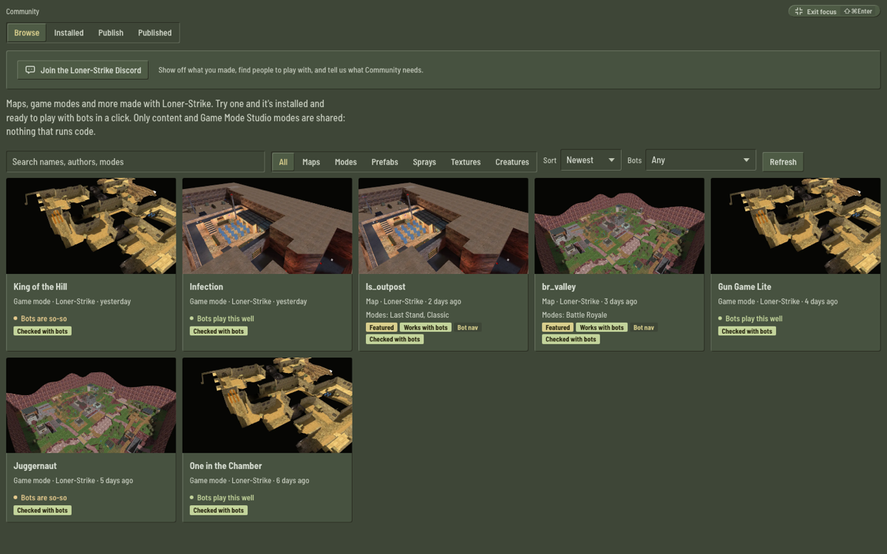
How it works
The files live on GameBanana, which hosts them, scans them for viruses, and has the pictures, likes and comments. A creation shows up in Community when its GameBanana page says Software Used: LonerStrike. Loner-Strike keeps a small list on top of that, with badges, featured picks and anything the moderators pulled.
Try something
- On Browse, search by name, maker or mode, and filter by Maps, Modes, Prefabs, Sprays or Textures.
- Pick one and press Try it, then Install it.
- Play with bots. A prefab opens in the map editor instead.
Installed things show up where they usually do (Maps, the mode list, the editor's Library), marked From Community. The Installed tab has Update, Remove and, for a mode, Remix in Game Mode Studio. A server can carry Community content too, from its Library › Community content tab; players get it through fast downloads.
Badges
- Works with bots: it comes with a bot nav and finished map knowledge.
- Checked with bots: it passed a map simulation.
- Settings only: a Game Mode Studio mode, built on your computer.
- Featured: picked by the Loner-Strike team.
What it will install
Community installs content (maps, textures, sounds, models, sprays) and Game Mode Studio modes. Nothing that runs code is ever downloaded: a Studio mode travels as its graph, and your own app builds the plugin. Anything marked Plugins or Not checked won't install, and something the team Pulled can't be installed any more.
Report something
Every creation has Report. Say what's wrong (it doesn't work, it looks harmful, it's someone else's work, it's offensive, it isn't a Loner-Strike creation) and add a note if you like. Only the page, the reason and your note are sent: nothing about you or your computer. Moderators see each report in our Discord and can pull a creation from every app within about half an hour. Copies already installed stay, with a note that it was pulled.
Share
Publishing
Share a map or a Game Mode Studio mode you made. The app checks it and packs it; you upload it to GameBanana; the app adds it to Community.
What can be shared
| Yes | No |
|---|---|
| Maps you made or added, with their nav, knowledge, overview, sounds, models and textures | The game's own stock maps |
| Game Mode Studio modes (only the graph is shared) | Plugin modes and anything compiled: .amxx, .sma, .dll, .exe, scripts |
| Prefabs, textures and sprays | Game settings files (.cfg, liblist.gam, plugin lists), archives inside the package, Metamod or dlls folders |
Share your own work, or work you have permission to share, and credit the people whose pieces you used. Sprays get a look from a moderator before they're listed.
Publish a map
- Compile the map into your game first (the editor's Publish… brings you here once it has).
- In Tools › Community, open Publish, choose A map and pick it. The app checks it and says what's missing; tips like naming places or running the map simulator earn it badges.
- Fill in Name, Made by (your GameBanana name), About it, the modes it's made for, and up to 6 screenshots. Shots from the map viewer work well.
- Make the package. It makes a
.zipwith the map, its nav and knowledge, a fresh download list, its overview and the files it uses. - Open GameBanana and sign in there. Add the attribute Software Used: LonerStrike (it's how Community finds it), upload the package unchanged, and add the screenshots. The app has copy buttons for the name, description and attribute.
- Once GameBanana has checked the file, paste the page's link back in the app and press Add to Community.
Most things are Listed straight away and show up within a few minutes. Some go to a moderator first. If the list turns it down, the app says why.
Publish a game mode
The same steps, with A game mode and one of your Studio modes. Others can play it and remix it in their own Studio, with your name on it.
After it's up
The Published tab lists what you've shared and where each one is. To update one, upload the new file to its GameBanana page, then paste the page's link in Publish again so the list checks the new file. Players see an Update on their Installed tab. The app never signs in to GameBanana for you.
Share
Community and your privacy
What Loner-Strike's community server keeps, and what it doesn't. The short version: nothing about you.
Browsing and installing
The app downloads the Community list from dl.lonerstrike.com and the files themselves from GameBanana, like any download. You don't need an account, and the list doesn't know who fetched it.
Publishing
Adding a creation sends the GameBanana page's address and the app's version, nothing else. The listing is built from what's public on GameBanana (the title, the GameBanana name of who made it, the pictures and the file) and the package's own description. Moderation decisions are kept with the listing.
Reports
A report keeps the page, the reason and your note for 90 days. To spot one person sending many reports, the server keeps a scrambled tag made from your address with a key that only lives in memory and changes when it restarts. Your address itself is never stored, and moderators never see it.
Rate limits and logs
To stop floods, the server counts requests per address in memory only, and forgets them. Its logs say what happened to which page, never who asked.
On your computer
What you published and what you installed are listed in Loner-Strike's own folder, along with a copy of the Community list. They never leave your computer. See also the site's privacy page.
AI agents
Connect an AI agent
Let coding agents like Claude Code, Codex, OpenCode or Cursor use Loner-Strike's tools: read maps, check them for bots, build in the map editor, fix navs and run your servers. It works through MCP (the Model Context Protocol).
Turn it on
- In the app, open Settings › AI agents.
- Turn on Let AI agents connect. On its own, agents can only look.
- To let them make changes, turn on Allow changes too: editing maps and navs, starting and stopping servers.
- Under Connect an agent, pick your agent, press Copy and paste where it says. The copied setup already has the app's real path.
Each agent
Replace <app> with the app's path. On a Mac that's /Applications/Loner-Strike.app/Contents/MacOS/loner-strike; the app's Copy button fills it in for you.
Claude Code
In a terminal:
claude mcp add --scope user --transport stdio loner-strike -- "<app>" --mcp-stdioclaude mcp list should say it's connected, and /mcp inside Claude Code lists the tools.
Codex
In ~/.codex/config.toml:
[mcp_servers.loner-strike]
command = "<app>"
args = ["--mcp-stdio"]OpenCode
In opencode.json:
"mcp": {"servers": {"loner-strike": {"type": "local", "command": ["<app>", "--mcp-stdio"]}}}Cursor
In ~/.cursor/mcp.json:
"mcpServers": {"loner-strike": {"type": "stdio", "command": "<app>", "args": ["--mcp-stdio"]}}Claude Desktop
In claude_desktop_config.json (Settings › Developer › Edit Config):
"mcpServers": {"loner-strike": {"command": "<app>", "args": ["--mcp-stdio"]}}VS Code
In .vscode/mcp.json, or MCP: Open User Configuration:
"servers": {"loner-strike": {"type": "stdio", "command": "<app>", "args": ["--mcp-stdio"]}}Others
Any agent that takes MCP servers (Windsurf and the rest) uses the same shape: a command of the app's path with --mcp-stdio as its argument. Agents that only speak HTTP can use Connect over HTTP with the token instead: http://127.0.0.1:8029/mcp with the header Authorization: Bearer <token>. The token is on the same page, and changes every launch unless you tick Keep the same token across restarts.
What agents can do
- List and read maps, run the map doctor and map simulator, read replays.
- Build and change maps in the map editor, compile and playtest.
- Fix navs, name places, make overviews and look at demos.
- Work in Game Mode Studio and Plugin Studio.
- Start, stop and change your own servers, read their console and logs, and look at the bots' thinking.
Agents also get ready-made prompts, like check map for bots, fix map nav and make game mode. Try: "make a small aim arena, check it for bots and playtest it".
What keeps you in charge
- Off until you turn it on, and only reachable from your own computer. Web pages can't use it.
- Look-only until Allow changes is on.
- The app asks you (An AI agent is asking) before deleting anything, kicking or banning, stopping a server people are on, starting the game, compiling into the game, or anything public or online.
- Never for agents: these settings themselves, updates and removing the app, phone access, shared control, passwords and secrets. Passwords, tokens, keys, webhooks and Steam IDs are never shown to them.
- Agents pick files through the system's own file window, with you.
- What agents did lists every call: done, not allowed, or didn't work.
Help
No bots or Bad Rcon
When the bots don't show up or the app can't reach the game. The app checks for these itself and fixes what it can; its message says what's left.
No bots, or the app can't connect to the game #
Loner-Strike isn't loading in the game.
- Quit the game completely and start it again from Play.
- Still nothing? Open Mods, click Repair, then restart the game. Your settings and mods stay.
- If your antivirus removed files, allow the game's folder first (more).
- Still stuck? Copy your diagnostics.
"Bad Rcon" lines in the game console #
That's the app knocking on the game's console with a password the game doesn't know. You don't need to set one: Loner-Strike sets it each map.
- If
rcon_passwordin the console shows"", Loner-Strike isn't loading: see No bots. - If it shows a different password, a config file sets its own. Remove the
rcon_passwordline fromserver.cfg,autoexec.cfgorlistenserver.cfgin the game'scstrikeorczerofolder, then restart the map.
It stopped working after a Steam update #
Steam updates, and "Verify integrity of game files", put back the game's original liblist.gam, which unhooks the mods. The app notices and fixes it by itself; restart the game afterwards.
To check by hand: the gamedll line in Half-Life\cstrike\liblist.gam (or czero\) should read
gamedll "addons\metamod\dlls\metamod.dll"and meta list in the game console should list AMX Mod X. "Unknown command" means the mods aren't loading.
Files keep disappearing #
Some antivirus programs, Windows Defender included, remove metamod.dll or amxmodx_mm.dll by mistake. Allow the game's folder in your antivirus, then click Repair in Mods.
"A different copy of the game is running" #
You have more than one copy installed and started one that Loner-Strike isn't set up in. Close it and start the game from the app's Play page. To use the other copy instead, change it in Settings, under Game.
Help
Setup and updates
Installing Loner-Strike, finding your game, and updating.
"No game found" #
- Install Counter-Strike 1.6 or Condition Zero from Steam, then click Look again.
- In a different place? Choose the game folder and pick the
Half-Lifefolder, the one withcstrikeorczeroin it. - On a Mac it has to be the Windows version, in CrossOver (Mac setup).
"This copy of the game is older than Loner-Strike supports" #
It's a copy from before Valve's 2013 update, such as an old retail or repacked one. Its engine can't load the mods. Use Counter-Strike 1.6 or Condition Zero from Steam.
"Counter-Strike is open" during setup or restore #
The game's files can't change while it runs. Quit the game, then try again. If it says Counter-Strike didn't close, quit it yourself, from Task Manager on Windows if needed.
Setup or a download failed #
- Couldn't download: check your internet connection and try again.
- Couldn't unpack a download: try again. If it keeps happening, clear downloads in Settings, under Storage.
- A mod didn't build: click Try again next to it in Mods. On a Mac, CrossOver has to be in Applications.
- Mod files missing from the app: download and install Loner-Strike again.
The game doesn't start, or keeps saying "Starting" #
Under CrossOver the first start can be slow. After a while Play offers to start again. If the game is open on another screen at its menu, close it and start from Play. Changing the resolution in the game while hosting sends you back to the game's main menu: start again from there or from the app.
Windows says it protected my PC #
That's SmartScreen, which warns about apps that aren't widely downloaded yet. Click More info, then Run anyway. The code is open on GitHub if you want to check what it does.
The app won't update #
- Couldn't check for updates: check your internet connection.
- Something is being set up or restored: wait for it to finish, then update.
- Otherwise, download the newest version from lonerstrike.com and install it over the old one. Your settings stay.
Help
Connecting
Friends, servers, Linux machines and your phone.
Friends can't join #
- They need the same game: a Condition Zero server needs Condition Zero.
- Check the address and the join password.
- Over the internet without a tunnel, your router has to forward UDP 27015 to your computer, and your firewall has to allow it. playit.gg or Tailscale in Play with friends avoid all of that.
- The first time, your Mac asks whether to allow incoming connections: click Allow. On Windows, allow it on private networks.
- "Failed to contact game server" on a Linux server: its firewall has to allow UDP 27015 to 27020 in. Check the provider's firewall.
A server won't start #
- "… is using port … already": the server it names has that port. Stop it, or give this server another port on its Overview tab.
- "keeps crashing, so it was left off": check its console on the Overview tab. A mod you just added is the usual cause: remove it and start again.
- On this computer, Reinstall Loner-Strike and its mods on its Health tab fixes a server that lost its files.
- On a Mac, CrossOver has to be in Applications, and the servers folder inside the game's bottle.
- Your Windows user name has letters from another language than Windows itself is set to? The old game server can trip over that folder name. In Settings, Servers folder, move the servers to a plain folder such as
C:\LonerStrike.
Can't connect to a Linux machine #
- Couldn't reach it: check the machine is running and SSH (TCP 22) is open in your provider's firewall.
- Key rejected: check the user (often
rootorubuntu), that the key was added to the machine, and that you picked the private key, not the.pubfile. Keys with a passphrase aren't supported yet. - The machine's identity changed: expected after rebuilding it. Run
ssh-keygen -R <address>, then add the server again. If you didn't rebuild it, don't connect: check the fingerprint in your provider's web console. - Only runs on x86: the Counter-Strike server needs an AMD or Intel machine, not ARM.
- Can't use sudo: connect as
root, or give the user passwordless sudo. - Can't reach port 22 on Oracle: the machine has no public IP. Add one (how).
- Setup stopped part way: Try again carries on where it stopped. Wipe and rebuild deletes the server's folder on the machine and starts over.
My phone can't connect #
- The phone has to be on the same Wi-Fi as the computer, and Loner-Strike open on the computer.
- On Windows, set the Wi-Fi to a Private network.
- "This phone isn't signed in any more": scan the QR code in Settings again.
- "Port 8028 is busy": something else is using it, often an older copy of the phone panel. Close it and try again.
Help
Tools, the editor and the studios
Fixes for the usual problems when making things.
The 3D view is black or empty #
The map viewer and editor draw with your graphics card. Update its driver, and on Windows make sure Loner-Strike isn't forced onto a basic display adapter. Big maps can take a few seconds to appear the first time.
Compiling doesn't start on a Mac #
The compiler runs through CrossOver, in the bottle with your game, so the game has to be set up in Loner-Strike first. "Compiling maps works on Windows, and on a Mac with CrossOver" means it couldn't find CrossOver: check it's in Applications. The first compile copies the compiler into the bottle and takes longer.
"The map leaks" #
Somewhere the inside of your map touches the void. Press Show the leak line and follow the red line from the entity it starts at; where it leaves the map is the gap. Close it with a brush and compile again. Remember that entities, like a func_wall or a door, don't seal a map: only world brushes do.
Textures are missing #
The map lists texture files (WADs) that aren't on this computer, or uses a texture none of them has. Put the WADs beside the map, or add them in Map properties › WADs. For maps from Hammer or J.A.C.K., see Texture files.
A playtest doesn't start, or bots stand still #
- Close the game if it asks, and let it restart into the playtest.
- Bots standing still haven't learned the map: leave Teach bots the map first ticked, or use Teach bots this map in the Map doctor.
- Bots stuck in one place: run the Map simulator and fix the spot in the Nav fixer.
Game Mode Studio won't playtest #
Playtest waits until Problems is empty: click each one to go to its node. If the game starts but nothing happens, check the mode's events are wired up (a node only runs when a wire leads to it), and watch the nodes light up while you play. Menus need a person to answer them.
A plugin won't compile #
Each error under Problems is explained in plain words and marked on its line. "Couldn't find your game's install to run the compiler" means Loner-Strike isn't set up in the game yet: run setup from the app first.
Something else is off #
The tools are Beta. Tell us on Discord or in a GitHub issue, with diagnostics, and the map or mode if you can share it.
Help
Questions
Is it really free? #
Yes. The code is open source (GPL-3) and every release is on GitHub.
Will it mess up my game? #
Every file it changes is backed up first. Remove a mode, or all of Loner-Strike, and your game goes back the way it was.
If something ever went badly wrong, which it shouldn't, Steam can always put the game back: right-click the game in your Steam library, then Properties, Installed Files, Verify integrity of game files. Afterwards, Repair in Mods sets Loner-Strike up again.
What about VAC and other people's servers? #
The mods are standard server mods (Metamod and AMX Mod X), the kind community servers have run for twenty years, and they only load in games you host. On someone else's server, nothing of Loner-Strike's runs.
1.6 or Condition Zero? #
Both work, and you can set up both. Settings, under Game, switches between them. Friends need the same one to join you.
How do updates work? #
The app checks when it starts, tells you when there's a new version and shows what's new before you install it. Your servers update themselves afterwards, once nobody's playing. Every change is in the changelog.
How do I remove it? #
- From one game: in Settings, under Setup, Remove from Counter-Strike 1.6 or Remove from Condition Zero. Your files are put back; settings, admins and stats are kept in case you set it up again.
- Everything: Remove everything in the same place takes it off every game and deletes your servers on this computer and all its data. Servers on Linux machines keep running.
- Then uninstall the app like any other.
Do the tools work on a Mac? #
Yes, all of them. The map editor's compiler is a Windows program, so on a Mac it runs through CrossOver, in the same bottle as your game.
What does Beta mean on the tools? #
They're new in 1.0 and still settling in. They back up files before changing them, but keep your own copy of work you care about, and tell us what you find.
Where are its files? #
In Settings, Storage shows Loner-Strike's folder, and downloads and map pictures can be cleared there to save space. Servers folder shows where your servers are.
Still stuck? Send diagnostics #
In the app's Settings, under Help, click Copy next to Copy diagnostics. It copies a short report (version, game folders, what's installed, recent errors) with no passwords. Paste it with your question in a GitHub issue; Report a problem opens one.
The same list has the usual problems (no bots, friends can't join, a server won't start), each with a button to the page that fixes it and a link to its docs.